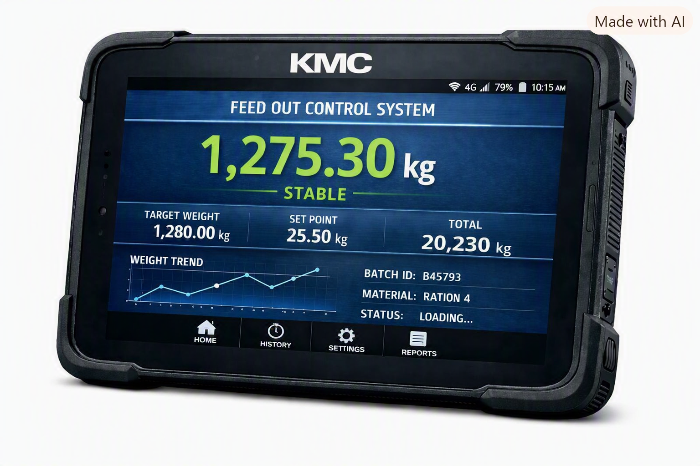

MATERIALS HANDLING--STATIC INDUSTRIALSCALES--IN MOTION AND DYNAMIC BELTS AND LOADERS--PACKAGING-- GRAVITY AND AUTOMATED SYSTEMS--SILO NON INTRUSIVE DEPLOYMENT.
FROM THE DAYS OF ZERO ELECTONIC DEVICES, MECHANICAL HONEST WEIGHT MEASUREMNT SYSTEMS, EVOLVING OVER TIME TO DEVELOPING CODE FOR AUTOMATION AND PROCESS CONTROL, ENGINEERING SOLUTIONS FOR EVERY APPLICATION ----- KMC HAS EXPERIENCE IN EVERY FACET OF THE INDUSTRY IN ITS FORM TODAY.
KMC HAVE BEEN FORFRONT IN INDUSTRY DEVELOPMENT FOR 40 YEARS.
We supply KMC INSTRUMENTATION because the time has arrived to reel the market madness back and give people an alternative Instrument and service option. KMC continues to innovate and provide reliable solutions for the industry and at the same time supply `instumentation at prices that are fair and justified. We are scale makers not scale suppliers and develop our own systems along with supplying low cost imported equipment that needs to be shown to businesses as an alternative low cost option.
